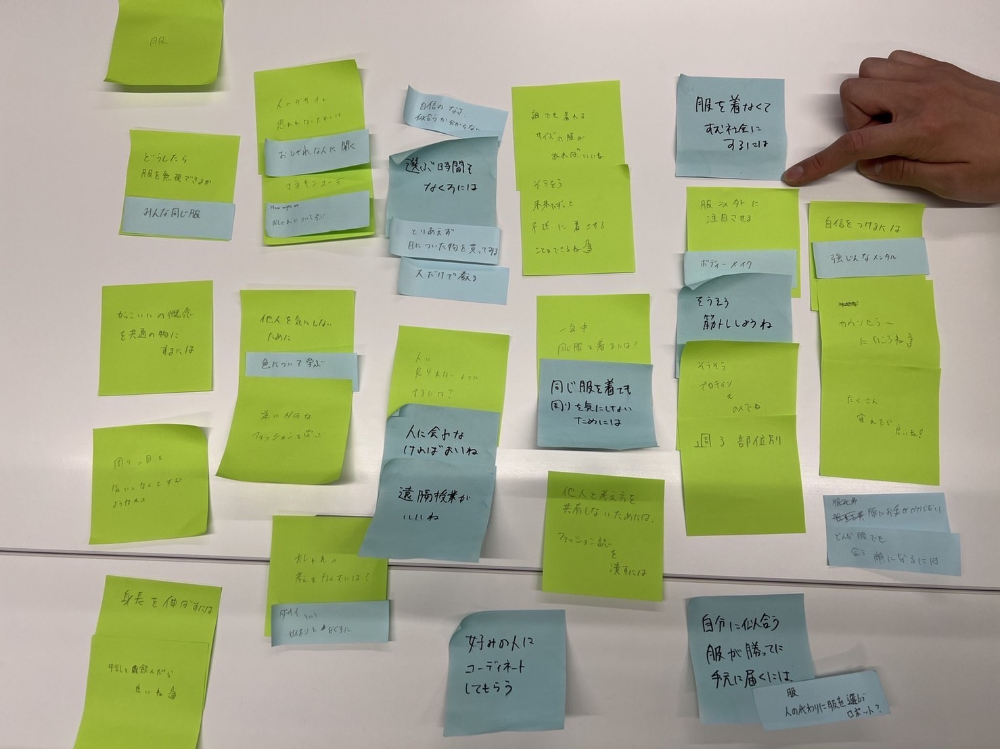

第3回
動きを操る
ソースコード
�光の明るさ・暗さによって、モーターが回ったり止まったりする。
- void loop() {
- // put your main code here, to run repeatedly:
- int val=0;
- val=analogRead(1);
- Serial.println(val);
- delay(500);
- if(val<200){
- // もしiが200より小さかったら回る
- for (int i=0; i <= 50; i++){
- clockwise(500);
- }
- for (int i=0; i <= 50; i++){
- counter_clockwise(5000);
- }
- }
- }
- void clockwise(int delaytime){
- digitalWrite(DIR, HIGH);//HIGHは時計回り
- digitalWrite(STEP, HIGH);
- delayMicroseconds(delaytime);
- digitalWrite(STEP, LOW);
- delayMicroseconds(delaytime);
- }
- void counter_clockwise(int delaytime){
- digitalWrite(DIR, LOW);//はLOWは反時計回り
- digitalWrite(STEP, HIGH);
- delayMicroseconds(delaytime);
- digitalWrite(STEP, LOW);
- delayMicroseconds(delaytime);
- }
グループワーク＜HMW＞
・正の感情 天気が良い日
・負の感情 人に考えを押し付けられた時
Yes,and
